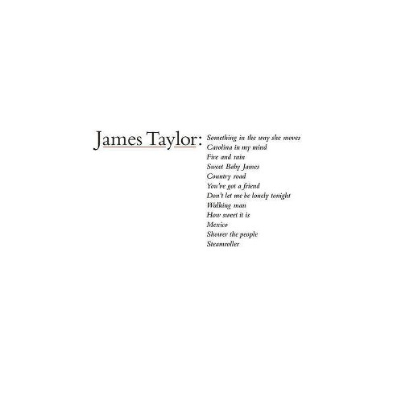
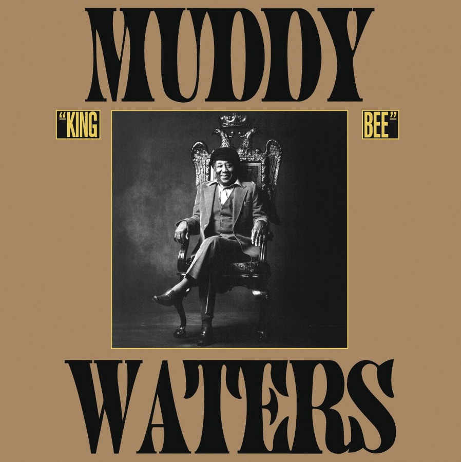
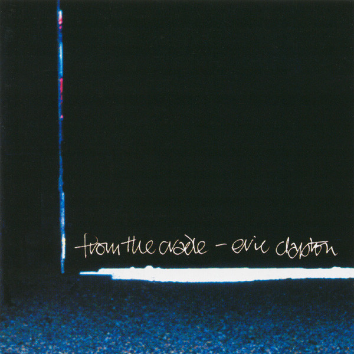

Settembre, uno dei mesi più belli dell'anno o meglio il mese che rappresenta per me l'incipit di quelli che sono i mesi più belli dell'anno. L'aria inizia a rinfrescare (chissà per quanto prima che tutto l'anno diventi un'infernale fornace estiva), riprendono le attività sportivo-ludiche che mi distraggono dall'alienante condizione lavorativa ed a breve tutto inzierà a tingersi di un tono rosso-arancio che proprio non mi dispiace.
Settembre per molti rappresenta la ripresa di attività spiacevoli (per i lavoratori il lavoro, per gli studenti la scuola o l'universita etc.), ma per quanto mi riguarda non ho mai sofferto la ripresa settembrina in nessuno dei mie stadi evolutivi (liceale-universitario-ricercatore-lavoratore), anzi più di una volta mi sono sentito appagato nell'essermi liberati della noia crogiolante che l'estate porta con sé ed aver ricominciato a vivere come uscendo dal letargo (sì non sono pazzo, passerei volentieri tutta la vita in un campeggio abbruzzese a spaccare legna ed il desiderio di vacanza si fa preponderante già alle prime settimane di ottobre, ma ahimè è la condizione di perenne insoddisfazione umana). Inoltre, ho sempre avuto un bel rapporto con il liceo (sarà che mia moglie l'ho conosciuta lì), quindi il ritrovare compagni e professori dopo l'estate non mi ha mai pesato. Soprattutto considerato il corpo docenti della sezione F del mio liceo. Porate pazienza e non abbiate fretta, la musica inizierà a suonare presto.
primo ascolto -Greatest Hits, James Taylor (1976)

primo ascolto
primo intermezzo
secondo ascolto -King Bee, Muddy Waters (1981)

secondo ascolto
secondo intermezzo
terzo ascolto -From the Cradle, Eric Clapton (1994)

terzo ascolto